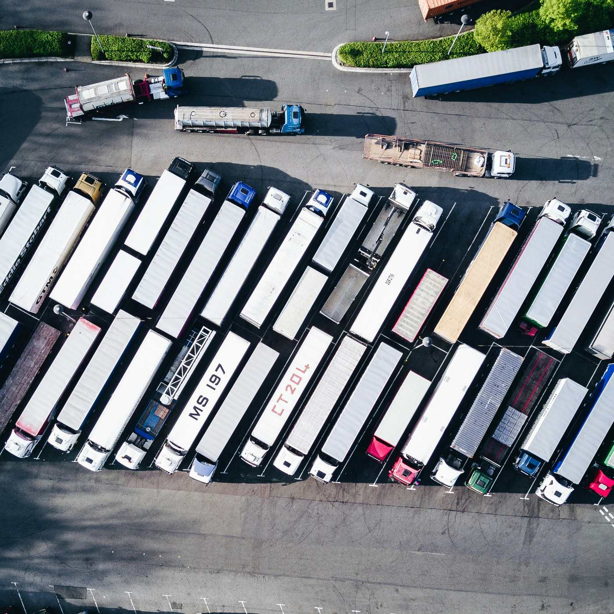

Towards an Internet of Logistics
Electric and autonomous trucks only reach their potential when vehicles, chargers, hubs, fleets and energy systems share information and coordinate decisions. This year's GlobalDrive teams from Munich and Stockholm investigate how such a connected logistics network could work, one thesis at a time.


Research Gap
What is missing in today's research and practice, and where this project contributes.
Ecosystem
We structure the Internet of Logistics in five layers, from physical assets up to the network and its business models.
A sixth layer, External Regulatory, runs alongside all of them, because rules and standards apply on every level. Every thesis contributes to at least one layer. Select a layer to see what it covers.
How the layers interact
Data and information flow up through the stack, requirements and control commands flow down. External regulation influences every layer. Hover over a layer, a flow or a regulation to follow its connections.
Learnings
Lessons from technological disruptions in other industries and what they mean for road freight.
Theses
Each team member works on one topic.
Click a thesis to read the abstract. Topics are still being refined.
Project & People
About GlobalDrive, the team and our partners.
Team
Partners
Looking for last year's results? GlobalDrive Vision 2035